Chapter 12
Aldehydes, Ketones and Carboxylic Acids
Aldehydes, Ketones and Carboxylic Acids

Objectives
After studying this Unit, you will be able to
Carbonyl compounds are of utmost importance to organic chemistry. They are constituents of fabrics, flavourings, plastics and drugs.
In the previous Unit, you have studied organic compounds with functional groups containing carbonoxygen single bond. In this Unit, we will study about the organic compounds containing carbon-oxygen double bond (>C=O) called carbonyl group, which is one of the most important functional groups in organic chemistry.
In aldehydes, the carbonyl group is bonded to a carbon and hydrogen while in the ketones, it is bonded to two carbon atoms. The carbonyl compounds in which carbonyl group is bonded to oxygen are known as carboxylic acids, and their derivatives (e.g. esters, anhydrides) while in compounds where carbon is attached to nitrogen and to halogens are called amides and acyl halides respectively. The general formulas of these classes of compounds are given below:


Aldehydes, ketones and carboxylic acids are widespread in plants and animal kingdom. They play an important role in biochemical processes of life. They add fragrance and flavour to nature, for example, vanillin (from vanilla beans), salicylaldehyde (from meadow sweet) and cinnamaldehyde (from cinnamon) have very pleasant fragrances.
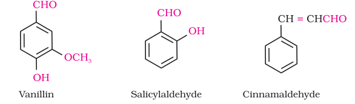
They are used in many food products and pharmaceuticals to add flavours. Some of these families are manufactured for use as solvents (i.e., acetone) and for preparing materials like adhesives, paints, resins, perfumes, plastics, fabrics, etc.
I. Aldehydes and ketones
Aldehydes and ketones are the simplest and most important carbonyl compounds.
There are two systems of nomenclature of aldehydes and ketones.
(a) Common names

The common names of ketones are derived by naming two alkyl or aryl groups bonded to the carbonyl group. The locations of substituents are indicated by Greek letters, α α′, β β′ and so on beginning with the carbon atoms next to the carbonyl group, indicated as αα′. Some ketones have historical common names, the simplest dimethyl ketone is called acetone. Alkyl phenyl ketones are usually named by adding the acyl group as prefix to phenone. For example
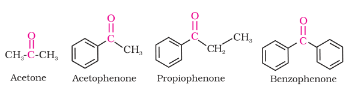
(b) IUPAC names
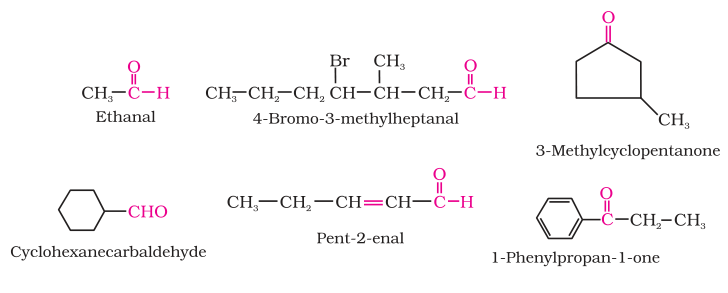

The common and IUPAC names of some aldehydes and ketones are given in Table 12.1.
Table 12.1: Common and IUPAC Names of Some Aldehydes and Ketones
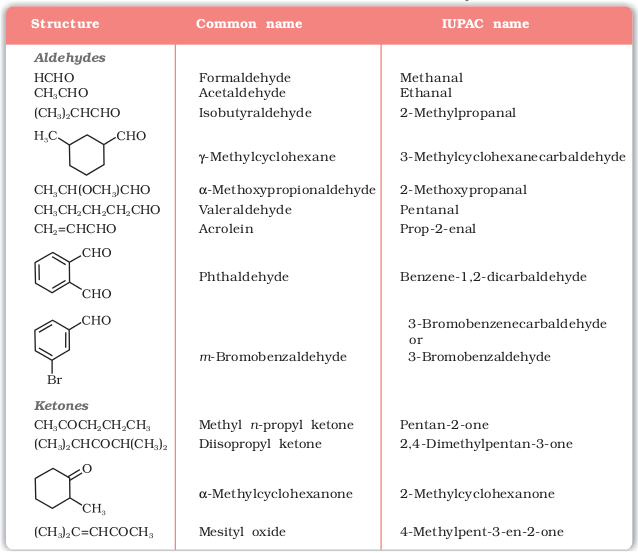
The carbonyl carbon atom is sp2-hybridised and forms three sigma (σ) bonds. The fourth valence electron of carbon remains in its p-orbital and forms a π-bond with oxygen by overlap with p-orbital of an oxygen. In addition, the oxygen atom also has two non bonding electron pairs. Thus, the carbonyl carbon and the three atoms attached to it lie in the same plane and the π-electron cloud is above and below this plane. The bond angles are approximately 120° as expected of a trigonal coplanar structure (Figure 12.1).

Fig.12.1 Orbital diagram for the formation of carbonyl group
The carbon-oxygen double bond is polarised due to higher electronegativity of oxygen relative to carbon. Hence, the carbonyl carbon is an electrophilic (Lewis acid), and carbonyl oxygen, a nucleophilic (Lewis base) centre. Carbonyl compounds have substantial dipole moments and are polar than ethers. The high polarity of the carbonyl group is explained on the basis of resonance involving a neutral (A) and a dipolar (B) structures as shown.

Intext Questions
12.1 Write the structures of the following compounds.
(i) α-Methoxypropionaldehyde (ii) 3-Hydroxybutanal
(iii) 2-Hydroxycyclopentane carbaldehyde (iv) 4-Oxopentanal
(v) Di-sec. butyl ketone (vi) 4-Fluoroacetophenone
Some important methods for the preparation of aldehydes and ketones are as follows:
1. By oxidation of alcohols
Aldehydes and ketones are generally prepared by oxidation of primary and secondary alcohols, respectively (Unit 11, Class XII).
2. By dehydrogenation of alcohols
This method is suitable for volatile alcohols and is of industrial application. In this method alcohol vapours are passed over heavy metal catalysts (Ag or Cu). Primary and secondary alcohols give aldehydes and ketones, respectively (Unit 11, Class XII).
3. From hydrocarbons
(i) By ozonolysis of alkenes: As we know, ozonolysis of alkenes followed by reaction with zinc dust and water gives aldehydes, ketones or a mixture of both depending on the substitution pattern of the alkene (Unit 13, Class XI).
(ii) By hydration of alkynes: Addition of water to ethyne in the presence of H2SO4 and HgSO4 gives acetaldehyde. All other alkynes give ketones in this reaction (Unit 13, Class XI).
1. From acyl chloride (acid chloride)
Acyl chloride (acid chloride) is hydrogenated over catalyst, palladium on barium sulphate. This reaction is called Rosenmund reduction.

2. From nitriles and esters
This reaction is called Stephen reaction.
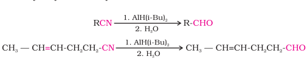
Similarly, esters are also reduced to aldehydes with DIBAL-H.
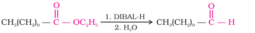
3. From hydrocarbons
(i) By oxidation of methylbenzene

This reaction is called Etard reaction.
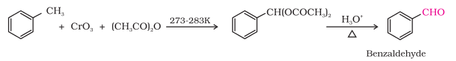
(ii) By side chain chlorination followed by hydrolysis
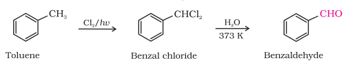
(iii) By Gatterman – Koch reaction
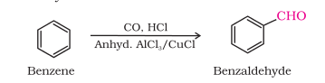
This reaction is known as Gatterman-Koch reaction.
1. From acyl chlorides
Treatment of acyl chlorides with dialkylcadmium, prepared by the reaction of cadmium chloride with Grignard reagent, gives ketones.

2. From nitriles

3. From benzene or substituted benzenes
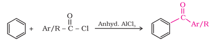
Example 12.1
Give names of the reagents to bring about the following transformations:
Solution
(i) C5H5NH+CrO3Cl-(PCC) (ii) K2Cr2O7 in acidic medium
(iii) CrO3 in the presence
(iv) (Diisobutyl)aluminium of acetic anhydride/ hydride (DIBAL-H) 1. CrO2Cl2 2. HOH
(v) PCC (vi) O3/H2O-Zn dust
Intext Questions
12.2 Write the structures of products of the following reactions;
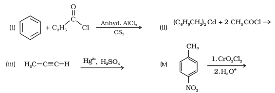
The physical properties of aldehydes and ketones are described as follows.
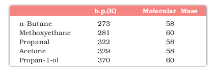
The lower members of aldehydes and ketones such as methanal, ethanal and propanone are miscible with water in all proportions, because they form hydrogen bond with water.
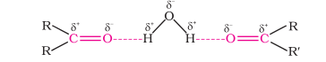
However, the solubility of aldehydes and ketones decreases rapidly on increasing the length of alkyl chain. All aldehydes and ketones are fairly soluble in organic solvents like benzene, ether, methanol, chloroform, etc. The lower aldehydes have sharp pungent odours. As the size of the molecule increases, the odour becomes less pungent and more fragrant. In fact, many naturally occurring aldehydes and ketones are used in the blending of perfumes and flavouring agents.
Example 12.2
Arrange the following compounds in the increasing order of their boiling points:

Solution
CH3CH2CH2CH2CH3 < H5C2-O-C2H5 < CH3CH2CH2CHO < CH3CH2CH2CH2OH
Intext Question
12.3 Arrange the following compounds in increasing order of their boiling points. CH3CHO, CH3CH2OH, CH3OCH3, CH3CH2CH3
Since aldehydes and ketones both possess the carbonyl functional group, they undergo similar chemical reactions.
1. Nucleophilic addition reactions
Contrary to electrophilic addition reactions observed in alkenes (refer Unit 13, Class XI), the aldehydes and ketones undergo nucleophilic addition reactions.
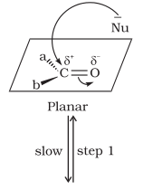
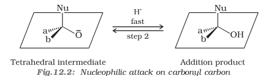
(i) Mechanism of nucleophilic addition reactions
(ii) Reactivity
Example 12.3
Would you expect benzaldehyde to be more reactive or less reactive in nucleophilic addition reactions than propanal? Explain your answer.
Solution
(iii) Some important examples of nucleophilic addition and nucleophilic addition-elimination reactions:
Cyanohydrins are useful synthetic intermediates.

(b) Addition of sodium hydrogensulphite: Sodium hydrogensulphite adds to aldehydes and ketones to form the addition products. The position of the equilibrium lies largely to the right hand side for most aldehydes and to the left for most ketones due to steric reasons. The hydrogensulphite addition compound is water soluble and can be converted back to the original carbonyl compound by treating it with dilute mineral acid or alkali. Therefore, these are useful for separation and purification of aldehydes.
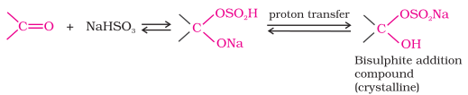
(c) Addition of Grignard reagents: (refer Unit 11, Class XII).
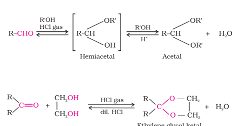
Ketones react with ethylene glycol under similar conditions to form cyclic products known as ethylene glycol ketals.
(e) Addition of ammonia and its derivatives: Nucleophiles, such as ammonia and its derivatives H2N-Z add to the carbonyl group of aldehydes and ketones. The reaction is reversible and catalysed by acid. The equilibrium favours the product formation due to rapid dehydration of the intermediate to form>C=N-Z.

Z = Alkyl, aryl, OH, NH2, C6H5NH, NHCONH2, etc.
Table 12.2: Some N-Substituted Derivatives of Aldehydes and Ketones (>C=N-Z)
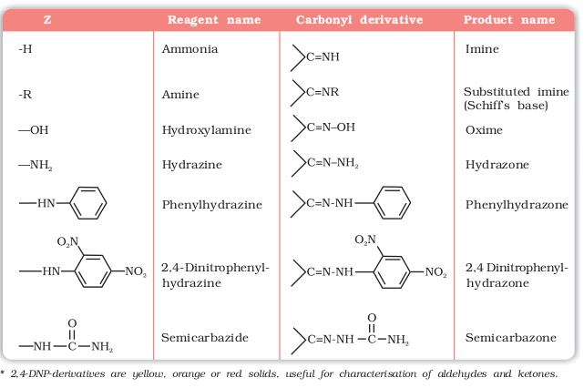
2. Reduction

Bernhard Tollens (1841-1918) was a Professor of Chemistry at the University of Gottingen, Germany.
3. Oxidation

Ketones are generally oxidised under vigorous conditions, i.e., strong oxidising agents and at elevated temperatures. Their oxidation involves carbon-carbon bond cleavage to afford a mixture of carboxylic acids having lesser number of carbon atoms than the parent ketone.
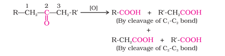
The mild oxidising agents given below are used to distinguish aldehydes from ketones:

(ii) Fehling's test: Fehling reagent comprises of two solutions, Fehling solution A and Fehling solution B. Fehling solution A is aqueous copper sulphate and Fehling solution B is alkaline sodium potassium tartarate (Rochelle salt). These two solutions are mixed in equal amounts before test. On heating an aldehyde with Fehling's reagent, a reddish brown precipitate is obtained. Aldehydes are oxidised to corresponding carboxylate anion. Aromatic aldehydes do not respond to this test.

(iii) Oxidation of methyl ketones by haloform reaction: Aldehydes and ketones having at least one methyl group linked to the carbonyl carbon atom (methyl ketones) are oxidised by sodium hypohalite to sodium salts of corresponding carboxylic acids having one carbon atom less than that of carbonyl compound. The methyl group is converted to haloform. This oxidation does not affect a carbon-carbon double bond, if present in the molecule.

Iodoform reaction with sodium hypoiodite is also used for detection of CH3CO group or CH3CH(OH) group which produces CH3CO group on oxidation.
Example 12.4
An organic compound (A) with molecular formula C8H8O forms an orange-red precipitate with 2,4-DNP reagent and gives yellow precipitate on heating with iodine in the presence of sodium hydroxide. It neither reduces Tollens' or Fehlings' reagent, nor does it decolourise bromine water or Baeyer's reagent. On drastic oxidation with chromic acid, it gives a carboxylic acid (B) having molecular formula C7H6O2. Identify the compounds (A) and (B) and explain the reactions involved.
Solution
(A) forms 2,4-DNP derivative. Therefore, it is an aldehyde or a ketone. Since it does not reduce Tollens' or Fehling reagent, (A) must be a ketone. (A) responds to iodoform test. Therefore, it should be a methyl ketone. The molecular formula of (A) indicates high degree of unsaturation, yet it does not decolourise bromine water or Baeyer's reagent. This indicates the presence of unsaturation due to an aromatic ring.
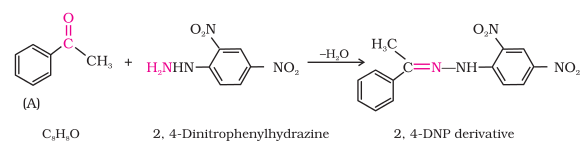

4. Reactions due to a-hydrogen
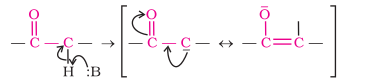
(i) Aldol condensation: Aldehydes and ketones having at least one α-hydrogen undergo a reaction in the presence of dilute alkali as catalyst to form β-hydroxy aldehydes (aldol) or β-hydroxy ketones (ketol), respectively. This is known as Aldol reaction.
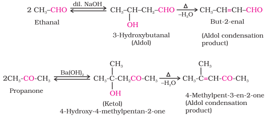
The name aldol is derived from the names of the two functional groups, aldehyde and alcohol, present in the products. The aldol and ketol readily lose water to give α ,β-unsaturated carbonyl compounds which are aldol condensation products and the reaction is called Aldol condensation. Though ketones give ketols (compounds containing a keto and alcohol groups), the general name aldol condensation still applies to the reactions of ketones due to their similarity with aldehydes.
(ii) Cross aldol condensation: When aldol condensation is carried out between two different aldehydes and / or ketones, it is called cross aldol condensation. If both of them contain α-hydrogen atoms, it gives a mixture of four products. This is illustrated below by aldol reaction of a mixture of ethanal and propanal.
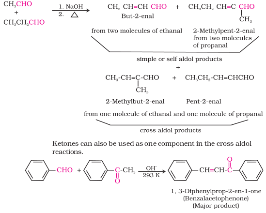
5. Other reactions
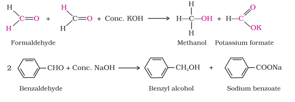
(ii) Electrophilic substitution reaction: Aromatic aldehydes and ketones undergo electrophilic substitution at the ring in which the carbonyl group acts as a deactivating and meta-directing group.

Intext Questions
12.4 Arrange the following compounds in increasing order of their reactivity in nucleophilic addition reactions.
(i) Ethanal, Propanal, Propanone, Butanone.
(ii) Benzaldehyde, p-Tolualdehyde, p-Nitrobenzaldehyde, Acetophenone.
Hint: Consider steric effect and electronic effect.
12.5 Predict the products of the following reactions:
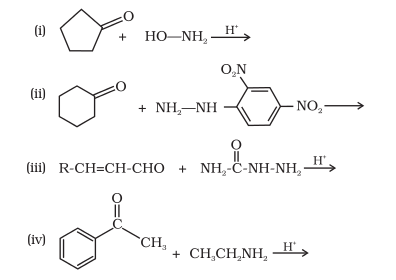
In chemical industry aldehydes and ketones are used as solvents, starting materials and reagents for the synthesis of other products. Formaldehyde is well known as formalin (40%) solution used to preserve biological specimens and to prepare bakelite (a phenol-formaldehyde resin), urea-formaldehyde glues and other polymeric products. Acetaldehyde is used primarily as a starting material in the manufacture of acetic acid, ethyl acetate, vinyl acetate, polymers and drugs. Benzaldehyde is used in perfumery and in dye industries. Acetone and ethyl methyl ketone are common industrial solvents. Many aldehydes and ketones, e.g., butyraldehyde, vanillin, acetophenone, camphor, etc. are well known for their odours and flavours.
Carboxylic Acids
Carbon compounds containing a carboxyl functional group, –COOH are called carboxylic acids. The carboxyl group, consists of a carbonyl group attached to a hydroxyl group, hence its name carboxyl. Carboxylic acids may be aliphatic (RCOOH) or aromatic (ArCOOH) depending on the group, alkyl or aryl, attached to carboxylic carbon. Large number of carboxylic acids are found in nature. Some higher members of aliphatic carboxylic acids (C12 – C18) known as fatty acids, occur in natural fats as esters of glycerol. Carboxylic acids serve as starting material for several other important organic compounds such as anhydrides, esters, acid chlorides, amides, etc.
Since carboxylic acids are amongst the earliest organic compounds to be isolated from nature, a large number of them are known by their common names. The common names end with the suffix –ic acid and have been derived from Latin or Greek names of their natural sources. For example, formic acid (HCOOH) was first obtained from red ants (Latin: formica means ant), acetic acid (CH3COOH) from vinegar (Latin: acetum, means vinegar), butyric acid (CH3CH2CH2COOH) from rancid butter (Latin: butyrum, means butter).
In the IUPAC system, aliphatic carboxylic acids are named by replacing the ending –e in the name of the corresponding alkane with – oic acid. In numbering the carbon chain, the carboxylic carbon is numbered one. For naming compounds containing more than one carboxyl group, the ending –e of the alkane is retained. The number of carboxyl groups are indicated by adding the multiplicative prefix, di, tri, etc. to the term oic. The position of –COOH groups are indicated by the arabic numeral before the multiplicative prefix. Some of the carboxylic acids along with their common and IUPAC names are listed in Table 12.3.
Table 12.3 Names and Structures of Some Carboxylic Acids
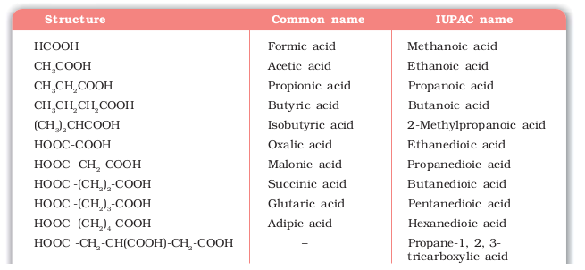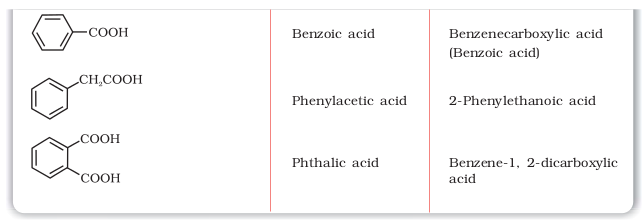
In carboxylic acids, the bonds to the carboxyl carbon lie in one plane and are separated by about 120°. The carboxylic carbon is less electrophilic than carbonyl carbon because of the possible resonance structure shown below:
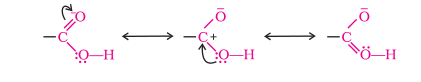
Intext Question
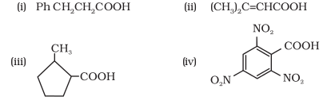
Some important methods of preparation of carboxylic acids are as follows.
1. From primary alcohols and aldehydes

Carboxylic acids are also prepared from aldehydes by the use of mild oxidising agents (Section 12.4).
2. From alkylbenzenes
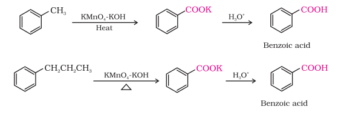
3. From nitriles and amides
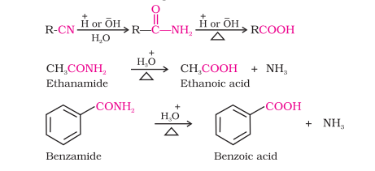
4. From Grignard reagents

As we know, the Grignard reagents and nitriles can be prepared from alkyl halides (refer Unit 10, Class XII). The above methods (3 and 4) are useful for converting alkyl halides into corresponding carboxylic acids having one carbon atom more than that present in alkyl halides (ascending the series).
5. From acyl halides and anhydrides
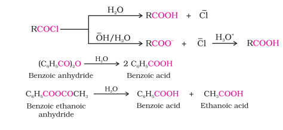
6. From esters
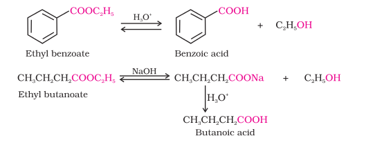
Example 12.5
Write chemical reactions to affect the following transformations:
(i) Butan-1-ol to butanoic acid
(ii) Benzyl alcohol to phenylethanoic acid
(iii) 3-Nitrobromobenzene to 3-nitrobenzoic acid
(iv) 4-Methylacetophenone to benzene-1,4-dicarboxylic acid
(v) Cyclohexene to hexane-1,6-dioic acid
(vi) Butanal to butanoic acid.
Solution

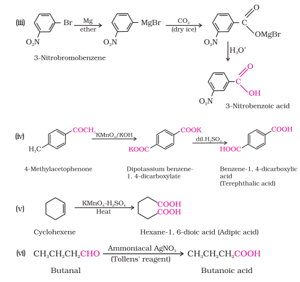
Intext Question
12.7 Show how each of the following compounds can be converted to benzoic acid.
(i) Ethylbenzene (ii) Acetophenone
(iii) Bromobenzene (iv) Phenylethene (Styrene)
Aliphatic carboxylic acids upto nine carbon atoms are colourless liquids at room temperature with unpleasant odours. The higher acids are wax like solids and are practically odourless due to their low volatility. Carboxylic acids are higher boiling liquids than aldehydes, ketones and even alcohols of comparable molecular masses. This is due to more extensive association of carboxylic acid molecules through intermolecular hydrogen bonding. The hydrogen bonds are not broken completely even in the vapour phase. In fact, most carboxylic acids exist as dimer in the vapour phase or in the aprotic solvents.


The reaction of carboxylic acids are classified as follows:
Acidit
Reactions with metals and alkalies
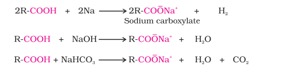
Carboxylic acids dissociate in water to give resonance stabilised carboxylate anions and hydronium ion


where Keq, is equilibrium constant and Ka is the acid dissociation constant.
For convenience, the strength of an acid is generally indicated by its pKa value rather than its Ka value.
pKa = – log Ka

The effect of the following groups in increasing acidity order is
Ph < I < Br < Cl < F < CN < NO2 < CF3
Thus, the following acids are arranged in order of increasing acidity (based on pKa values):

Direct attachment of groups such as phenyl or vinyl to the carboxylic acid, increases the acidity of corresponding carboxylic acid, contrary to the decrease expected due to resonance effect shown below:
This is because of greater electronegativity of sp2 hybridised carbon to which carboxyl carbon is attached. The presence of electron withdrawing group on the phenyl of aromatic carboxylic acid increases their acidity while electron donating groups decrease their acidity.
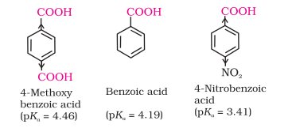
1. Formation of anhydride
Carboxylic acids on heating with mineral acids such as H2SO4 or with P2O5 give corresponding anhydride.

2. Esterification

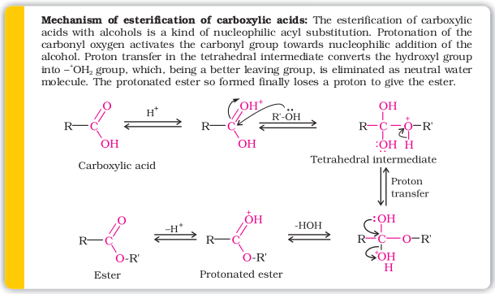
3. Reactions with PCl5, PCl3 and SOCl2
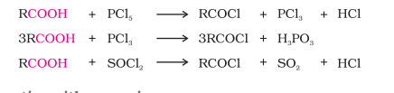
4. Reaction with ammonia

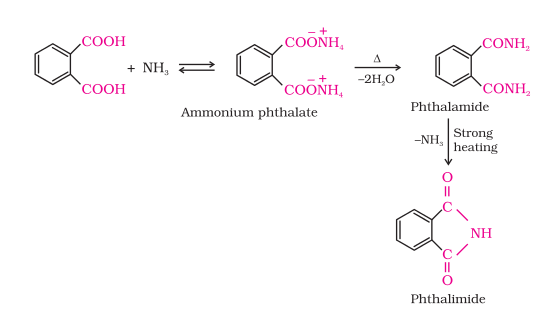
1. Reduction
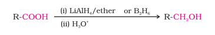
2. Decarboxylation
Carboxylic acids lose carbon dioxide to form hydrocarbons when their sodium salts are heated with sodalime (NaOH and CaO in the ratio of 3 : 1). The reaction is known as decarboxylation.
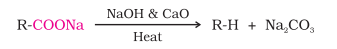
Alkali metal salts of carboxylic acids also undergo decarboxylation on electrolysis of their aqueous solutions and form hydrocarbons having twice the number of carbon atoms present in the alkyl group of the acid. The reaction is known as Kolbe electrolysis (Unit 13, Class XI).
1. Halogenation
Carboxylic acids having an α-hydrogen are halogenated at the α -position on treatment with chlorine or bromine in the presence of small amount of red phosphorus to give α-halocarboxylic acids. The reaction is known as Hell-Volhard-Zelinsky reaction.

2. Ring substitution
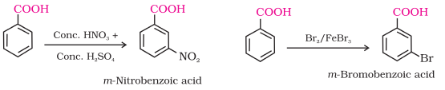
Intext Question
12.8 Which acid of each pair shown here would you expect to be stronger?
(i) CH3CO2H or CH2FCO2H (ii) CH2FCO2H or CH2ClCO2H
(iii) CH2FCH2CH2CO2H or CH3CHFCH2CO2H

Methanoic acid is used in rubber, textile, dyeing, leather and electroplating industries. Ethanoic acid is used as solvent and as vinegar in food industry. Hexanedioic acid is used in the manufacture of nylon-6, 6. Esters of benzoic acid are used in perfumery. Sodium benzoate is used as a food preservative. Higher fatty acids are used for the manufacture of soaps and detergents.
SUMMARY
EXERCISES
(i) Cyanohydrin (ii) Acetal (iii) Semicarbazone
(iv) Aldol (v) Hemiacetal (vi) Oxime
(vii) Ketal (vii) Imine (ix) 2,4-DNP-derivative
(x) Schiff's base
12.2 Name the following compounds according to IUPAC system of nomenclature:
(i) CH3CH(CH3)CH2CH2CHO (ii) CH3CH2COCH(C2H5)CH2CH2Cl
(iii) CH3CH=CHCHO (iv) CH3COCH2COCH3
(v) CH3CH(CH3)CH2C(CH3)2COCH3 (vi) (CH3)3CCH2COOH
(vii) OHCC6H4CHO-p
12.3 Draw the structures of the following compounds.
(i) 3-Methylbutanal (ii) p-Nitropropiophenone
(iii) p-Methylbenzaldehyde (iv) 4-Methylpent-3-en-2-one
(v) 4-Chloropentan-2-one (vi) 3-Bromo-4-phenylpentanoic acid
(vii) p,p'-Dihydroxybenzophenone (viii) Hex-2-en-4-ynoic acid
12.4 Write the IUPAC names of the following ketones and aldehydes. Wherever possible, give also common names.
(i) CH3CO(CH2)4CH3 (ii) CH3CH2CHBrCH2CH(CH3)CHO
(iii) CH3(CH2)5CHO (iv) Ph-CH=CH-CHO
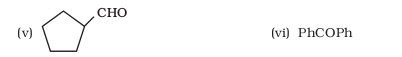
12.5 Draw structures of the following derivatives.
(i) The 2,4-dinitrophenylhydrazone of benzaldehyde
(ii) Cyclopropanone oxime
(iii) Acetaldehydedimethylacetal
(v) The ethylene ketal of hexan-3-one
(vi) The methyl hemiacetal of formaldehyde
(i) PhMgBr and then H3O+ (ii) Tollens' reagent
(iii) Semicarbazide and weak acid (iv) Excess ethanol and acid
(v) Zinc amalgam and dilute hydrochloric acid
(i) Methanal (ii) 2-Methylpentanal (iii) Benzaldehyde
(iv) Benzophenone (v) Cyclohexanone (vi) 1-Phenylpropanone
(vii) Phenylacetaldehyde (viii) Butan-1-ol (ix) 2,2-Dimethylbutanal
12.8 How will you convert ethanal into the following compounds?
(i) Butane-1,3-diol (ii) But-2-enal (iii) But-2-enoic acid
12.10 An organic compound with the molecular formula C9H10O forms 2,4-DNP derivative, reduces Tollens' reagent and undergoes Cannizzaro reaction. On vigorous oxidation, it gives 1,2-benzenedicarboxylic acid. Identify the compound.
(i) Acetaldehyde, Acetone, Di-tert-butyl ketone, Methyl tert-butyl ketone (reactivity towards HCN)
(ii) CH3CH2CH(Br)COOH, CH3CH(Br)CH2COOH, (CH3)2CHCOOH, CH3CH2CH2COOH (acid strength)
(i) Propanal and Propanone (ii) Acetophenone and Benzophenone
(iii) Phenol and Benzoic acid (iv) Benzoic acid and Ethyl benzoate
(v) Pentan-2-one and Pentan-3-one (vi) Benzaldehyde and Acetophenone
(vii) Ethanal and Propanal
12.14 How will you prepare the following compounds from benzene? You may use any inorganic reagent and any organic reagent having not more than one carbon atom
(i) Methyl benzoate (ii) m-Nitrobenzoic acid
(iii) p-Nitrobenzoic acid (iv) Phenylacetic acid
(v) p-Nitrobenzaldehyde.
12.15 How will you bring about the following conversions in not more than two steps?
(i) Propanone to Propene (ii) Benzoic acid to Benzaldehyde
(iii) Ethanol to 3-Hydroxybutanal (iv) Benzene to m-Nitroacetophenone
(v) Benzaldehyde to Benzophenone (vi) Bromobenzene to 1-Phenylethanol
(vii) Benzaldehyde to 3-Phenylpropan-1-ol
(viii) Benazaldehyde to α-Hydroxyphenylacetic acid
(ix) Benzoic acid to m- Nitrobenzyl alcohol
12.16 Describe the following:
(i) Acetylation (ii) Cannizzaro reaction
(iii) Cross aldol condensation (iv) Decarboxylation
12.17 Complete each synthesis by giving missing starting material, reagent or products
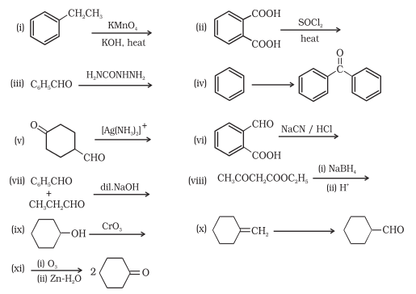
(i) Cyclohexanone forms cyanohydrin in good yield but 2,2,6-trimethylcyclohexanone does not.
(ii) There are two –NH2 groups in semicarbazide. However, only one is involved in the formation of semicarbazones.
(iii) During the preparation of esters from a carboxylic acid and an alcohol in the presence of an acid catalyst, the water or the ester should be removed as soon as it is formed.
12.19 An organic compound contains 69.77% carbon, 11.63% hydrogen and rest oxygen. The molecular mass of the compound is 86. It does not reduce Tollens' reagent but forms an addition compound with sodium hydrogensulphite and give positive iodoform test. On vigorous oxidation it gives ethanoic and propanoic acid. Write the possible structure of the compound.
12.20 Although phenoxide ion has more number of resonating structures than carboxylate ion, carboxylic acid is a stronger acid than phenol. Why?
Answers to Some Intext Questions
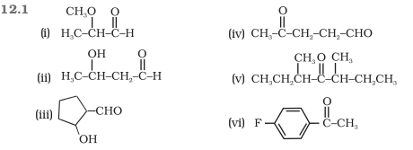

12.3 CH3CH2CH3 < CH3OCH3 < CH3CHO < CH3CH2OH
12.4 (i) Butanone < Propanone < Propanal < Ethanal
(ii) Acetophenone < p-Tolualdehyde , Benzaldehyde < p-Nitrobenzaldehyde.
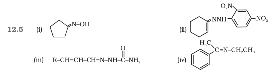
12.6 (i) 3-Phenylpropanoic acid (ii) 3-Methylbut-2-enoic acid
(iii) 2-Methylcyclopentanecarboxylic acid. (iv) 2,4,6-Trinitrobenzoic acid
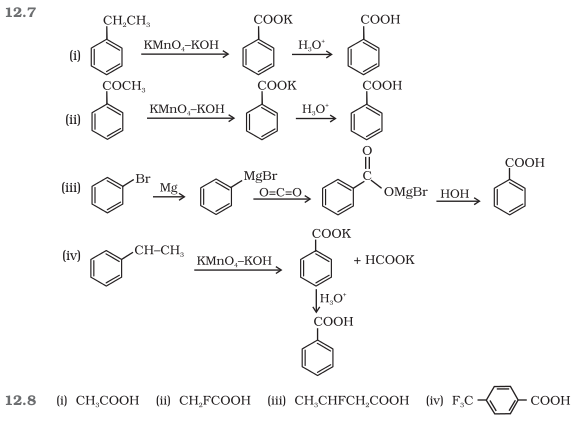